TelescopeView
Pictures, videos and comics. One fast app for all of it. Open the formats other apps won't, edit and crop pictures, save frames from videos, clear out duplicates, and read comics, manga and webtoons, all in one window.
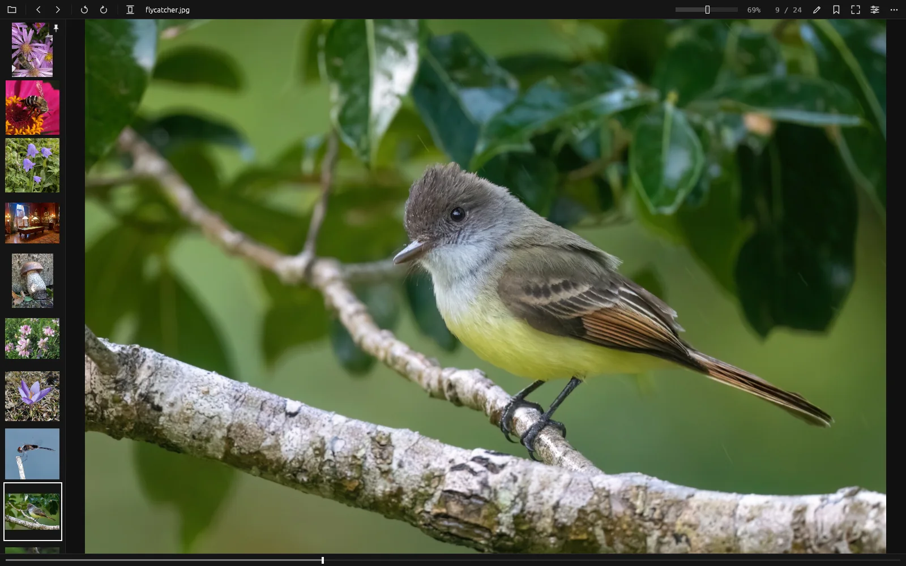
Works ahead of you
Most viewers make you wait for each picture, then send you to another program to do anything with it. TelescopeView keeps the next pictures ready and the tools where you already are.
Preloading in the background
A pool of decoder threads keeps the pictures around the current one ready, and looks further ahead when you flip fast. The current picture stays up until the next is fully ready, so nothing flickers or waits.
Instant, measured
With 24-megapixel JPEGs on a Ryzen 7 5700X, every step was instant at 6, 15 and 30 pictures per second. Set IV_STATS=1 to log it on your own machine.
One app for the whole folder
Photos, camera RAW, HEIC, JPEG XL, EXR, DDS, PSD, SVG, videos and comic archives all sit in the same gallery, so you never switch apps halfway through.
The tools are right there
Fix a photo, crop it, save a frame from a video or clear out duplicates without opening a second program.
Light on the system
One GPU upload per frame at most, and zero CPU use while idle.
Out of the way
Flat, square and minimal, with dark, light and high-contrast themes. The toolbar keeps to the everyday buttons. Everything else is one click away.
Picture editor
The pencil in the top bar opens it along the bottom. Drag a dial to change it, and drag the line to compare. Try it on the picture here.
- Light balance
- Brightness
- Exposure
- Contrast
- Highlights
- Shadows
- Saturation
- Tint
- Temperature
- Sharpness
- Definition
- Straighten
- Crop with free, original or fixed ratios
- Rotate, flip, undo and redo
- EXIF and the color profile are kept
- Save sends the original to the Recycle Bin. Save a copy writes a new one
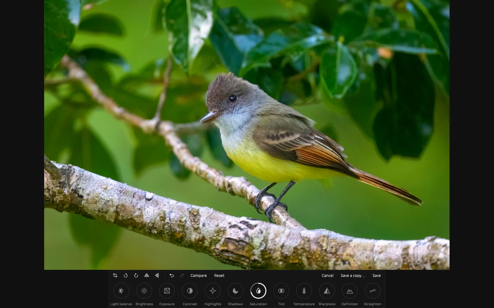
BeforeAfter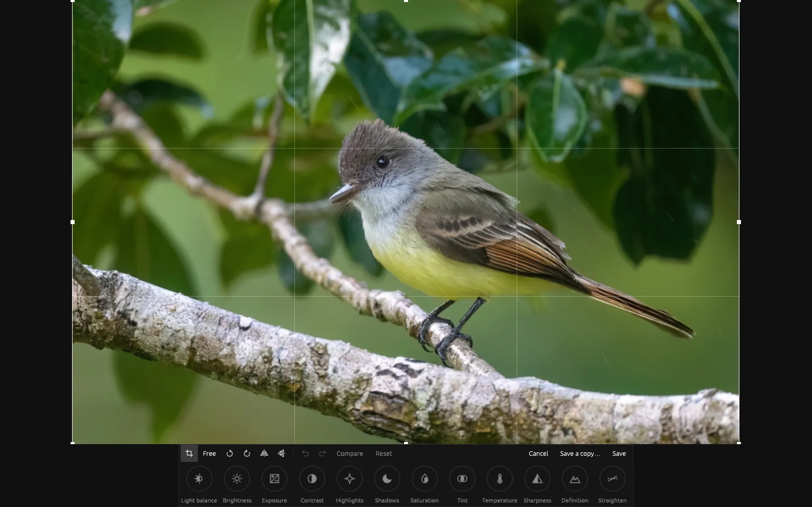
Find duplicates
Scan a folder for exact copies and look-alikes, then go through them in pairs with the arrow keys: keep the left, keep the right, keep both.
- Zoom and pan both pictures together
- Choose how alike pictures have to be
- Nothing is deleted until you confirm on the last page, and then it goes to the Recycle Bin
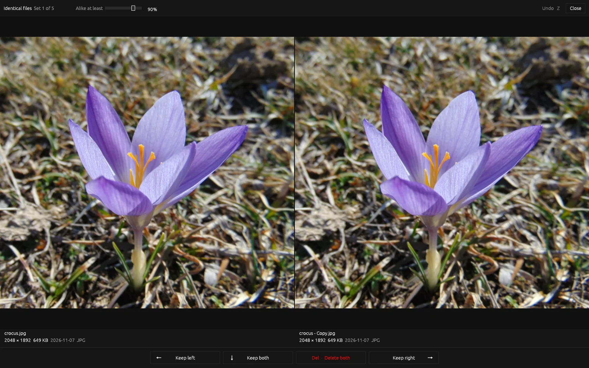
Pick a frame
Split a video into every frame as a grid, starting from where the video was. Then save any frame at full resolution.
- PNG or JPEG, next to the video or in a folder you choose
- Never overwrites a file
- Arrows, Page Up and Down, or the slider to move around
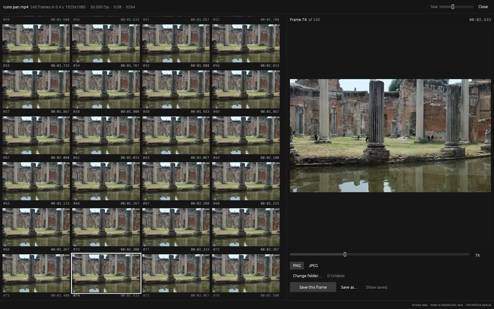
Comics, manga and webtoons
Drop in an archive or a folder of chapters and read. The layout is remembered per series.
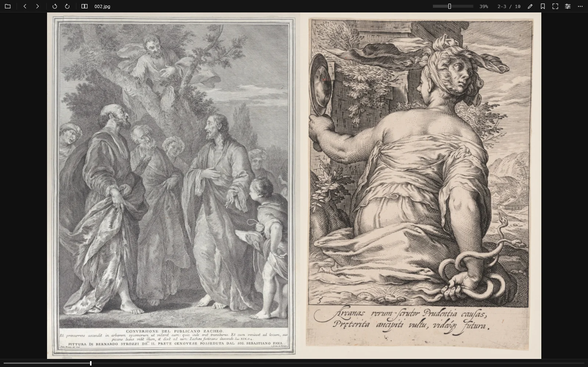
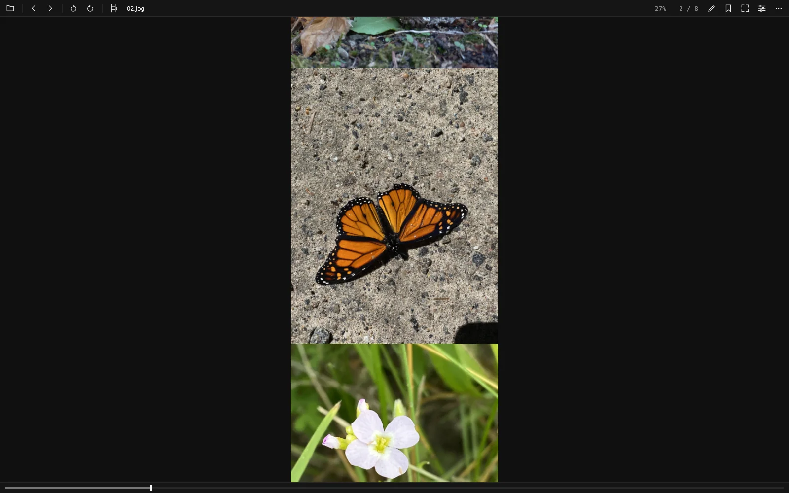
- CBZ
- CBR
- CB7
- CBT
- ZIP
- RAR
- 7Z
- TAR
- EPUB
- PDF (Windows)
- Split wide pages
- Chapter to chapter
- Go to page
- Bookmarks you can save as a file
Videos with sound
Videos sit in the folder between the pictures and start at once, because the ones either side are opened ahead. Pause, step, seek and set the volume. GIF, APNG and animated WebP get pause and frame stepping too.
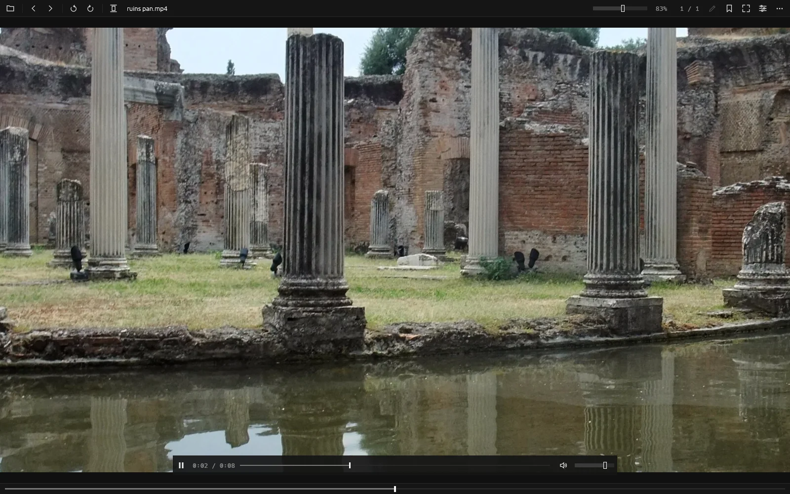
Your photo's details
The info panel shows size, format and file date, plus the camera, lens, exposure, date taken and GPS location from the EXIF. Press I any time.
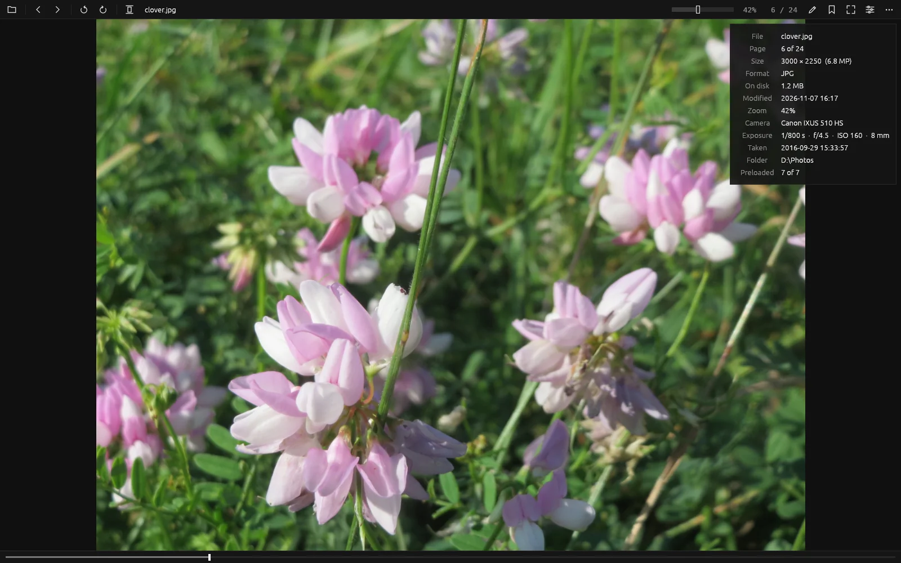
Save an enlarged copy
New in 1.1. On a picture, the ... menu or a right-click saves a copy at 2x or 4x the size, right next to the original.
- Runs on the CPU, with nothing to install
- The original is never touched
- It helps most on small pictures. From about 1000 px up the difference is hard to see, and JPEG blocks stay
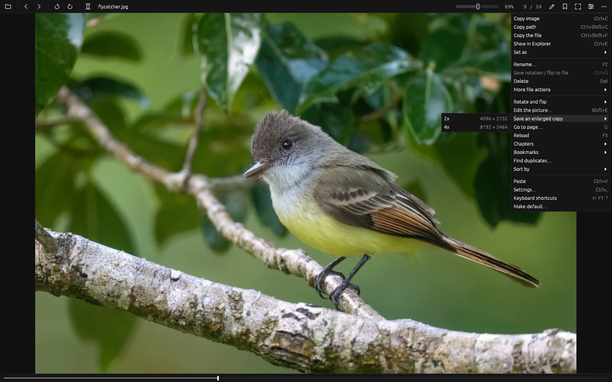
Your way
Press T to change this page's theme, the same key as in the app.
- Dark, light and high contrast
- Interface size from 100 to 200%
- Every shortcut can be changed
- Every toolbar button can be shown or hidden
- Reduce motion, and names on toolbar buttons for screen readers
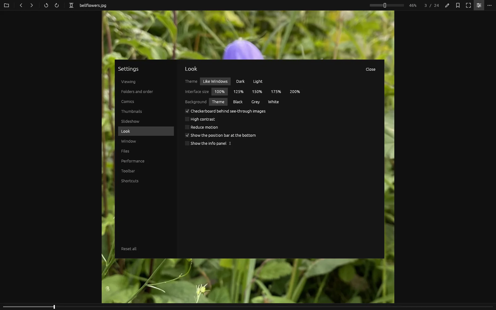
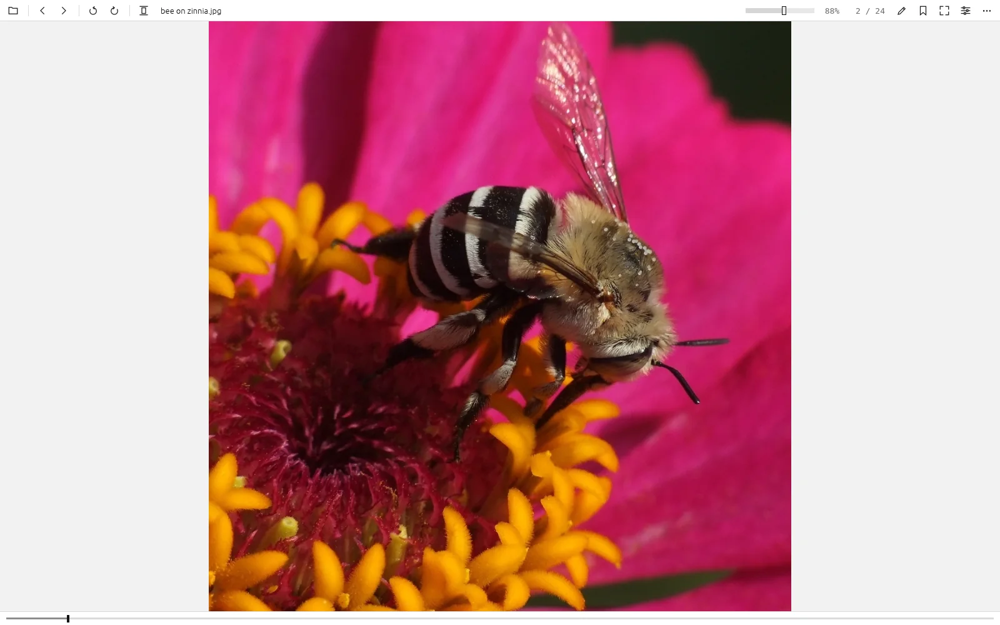
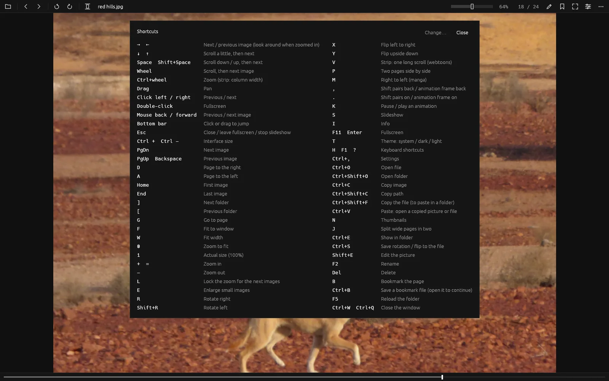
Everything it does
Viewing
Fit to window or width, zoom, zoom lock for comparing shots, enlarge small images, rotate and flip (saved losslessly into JPEGs), fullscreen, slideshow, an optional glide between images.
Picture editor
Twelve dials, crop, undo and redo, and a before and after line to drag. EXIF and the color profile are kept.
Find duplicates
Exact copies and look-alikes in pairs. Nothing is deleted until you confirm.
Pick a frame
Every frame of a video as a grid, saved at full resolution as PNG or JPEG.
Save an enlarged copy
2x or 4x, next to the original, for still pictures that are real files.
Comics and manga
Two-page spreads, right-to-left reading, split wide pages, chapter-to-chapter reading, go to page.
Webtoons
One long vertical strip from a folder, with adjustable column width and auto-scroll.
Bookmarks
Bookmark any page, see it on the page bar, and save it as a .tvmark file that reopens right there.
Thumbnails
A strip that slides out from any edge of the window, plus page previews on the position bar.
Photos
Camera, lens, exposure, date taken and GPS location from EXIF in the info panel.
Animations and videos
GIF, APNG and animated WebP with pause and frame stepping. Videos with sound through ffmpeg.
Files
Copy, paste, rename, move, delete to the Recycle Bin, set as wallpaper, show in Explorer.
Resume
Every folder reopens where you left it, even when an external drive comes back under another letter.
Default app
Tick what it should open: pictures, RAW photos, videos, comics or single formats. Everything else stays with the app that opens it now.
Opens what other apps won't
Images
- PNG
- APNG
- JPEG
- WebP
- GIF
- BMP
- TIFF
- ICO
- TGA
- QOI
- PNM
- HDR
- EXR
- DDS
- Farbfeld
- JPEG XL
- SVG
- PSD
Windows extras
Anything with an installed Windows codec.
- HEIC / HEIF
- AVIF
- JPEG XR
- DNG
- CR2
- CR3
- NEF
- ARW
- and more RAW
Comics and books
- CBZ / ZIP
- CBR / RAR
- CB7 / 7Z
- CBT / TAR
- EPUB (picture books and comics)
- PDF (Windows)
Videos
Anything ffmpeg plays, with sound.
- MP4
- MKV
- WebM
- MOV
- AVI
- WMV
- and more
Quick start
Open a picture by double-clicking it, dragging it onto the window or pressing Ctrl+O. Then use the arrow keys.
Download
Every build comes for both x64 (Intel / AMD) and ARM64, as an installer or as a portable app.
| Platform | Installer | Portable |
|---|---|---|
| Windows 10 / 11 Installs for your user only, no admin |
x64 installerARM64 installer | x64 zipARM64 zip |
| macOS One app for Apple silicon and Intel |
Disk image (.dmg) | Zip, just the app |
| Linux | x64 .debARM64 .deb | x64 zipARM64 zip |
Videos work out of the box
The Windows downloads and the Linux zips carry a portable ffmpeg, which is why the Windows download is about 73 MB. The .deb uses your distribution's ffmpeg. On a Mac, run brew install ffmpeg once.
Not code-signed yet
On Windows, SmartScreen asks once: choose More info, then Run anyway. On a Mac, right-click the app and choose Open the first time. Every release lists SHA-256 checksums.
What's been tested
Only the Windows x64 build has been tested on real hardware so far. The ARM64, macOS and Linux builds are made on GitHub's build machines. Reports are very welcome.